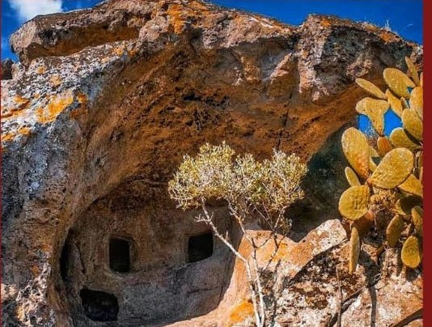
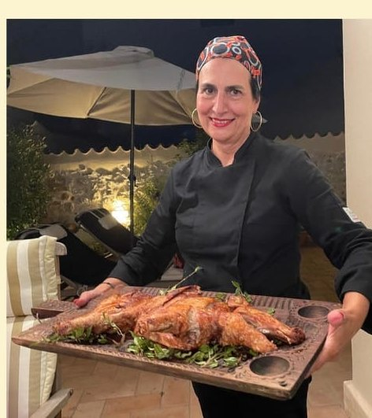
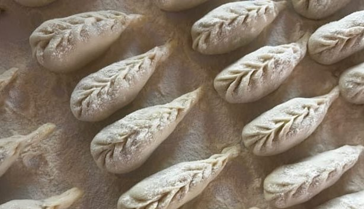
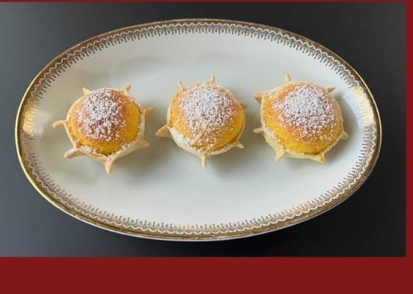
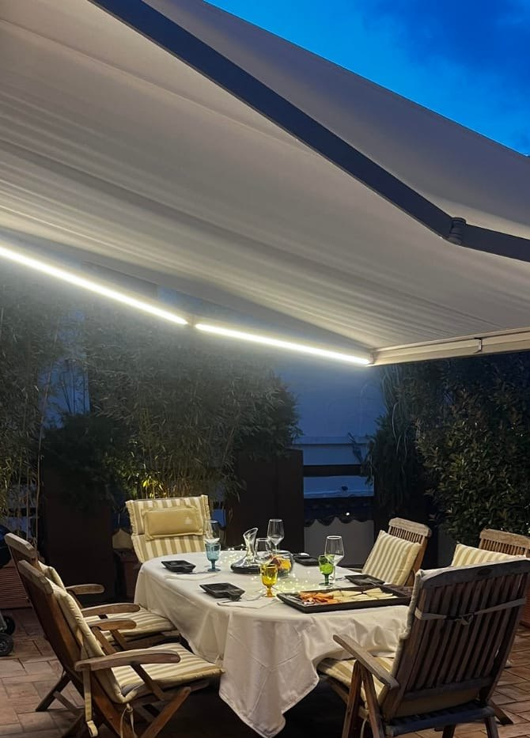

Le specialità fatte a mano
I celebri Culurgiones, le fragranti Seadas, il ricamato Pane Cocoi, le ricche Panadas e tutti i dolci tipici dell'isola.
L'Aquila · Cucina tipica sarda
la casa delle Fate
Un viaggio di sapori autentici dalla Sardegna, preparati a mano secondo tradizione nel cuore dell'Aquila.
La Leggenda
La leggenda di Sa Domu de Janas è meravigliosa: minuscole creature dagli abiti rossi, collane d'oro e fazzoletti d'argento, che vivevano in piccole grotte scavate nella roccia. Uscivano solo la notte per proteggere la pelle delicata dal sole; di giorno tessevano su telai d'oro.
Forse hanno tramandato le grandi tradizioni dell'isola: la panificazione, su ballu tundu e l'uso delle erbe curative. Reali o nate dalla fantasia popolare, le Janas sono un pilastro dei miti di un'isola dove la magia scorre in profondità — nelle mani, negli occhi e nel cuore delle donne sarde che creano capolavori.


Chi Siamo
Dalla passione innata per la buona cucina e dal desiderio di accorciare le distanze tra due terre meravigliose nasce Sa Domu de Janas. Simonetta ha voluto portare nel cuore dell'Aquila — la città dove vive — i sapori autentici, i profumi e l'ospitalità della sua Sardegna.
Seleziona con cura e fa arrivare direttamente dall'isola i migliori prodotti di caseifici, macellerie e panifici artigianali sardi. Il cuore di tutto è l'artigianalità: ogni piatto è preparato interamente a mano, secondo tradizione.
La Cucina
Fatti a mano, secondo tradizione. Dai grandi classici alle specialità più rare dell'isola.
I celebri Culurgiones, le fragranti Seadas, il ricamato Pane Cocoi, le ricche Panadas e tutti i dolci tipici dell'isola.
L'immancabile Su Porceddu, agnello, pecora e ricette tipiche di mare — ma anche specialità di asino, cavallo e Bue Rosso.
Il Pane Carasau, Su Zichi e la Fregola: la base autentica della tavola sarda.
Per chiudere in purezza, con il sapore selvaggio del Mirto e del Filu 'e Ferru.
Le Esperienze
Un'esperienza gastronomica intima e autentica, pensata per farti riscoprire i sapori veri della Sardegna.
Rendi indimenticabili i tuoi momenti più importanti in un'atmosfera riservata e curata nei minimi dettagli. Ideale per:
Galleria



Prenotazioni
Posti limitati per garantire a ogni ospite la cura che merita. Chiamaci per comporre insieme il tuo menù.
Chiama ora & prenota